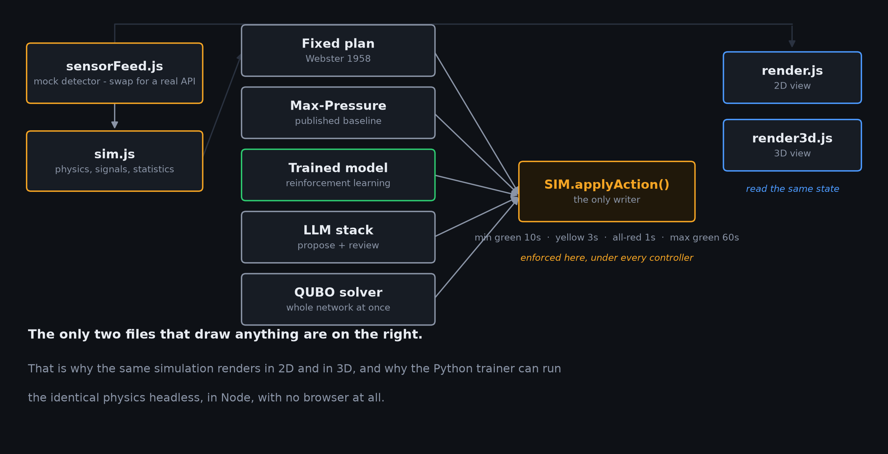
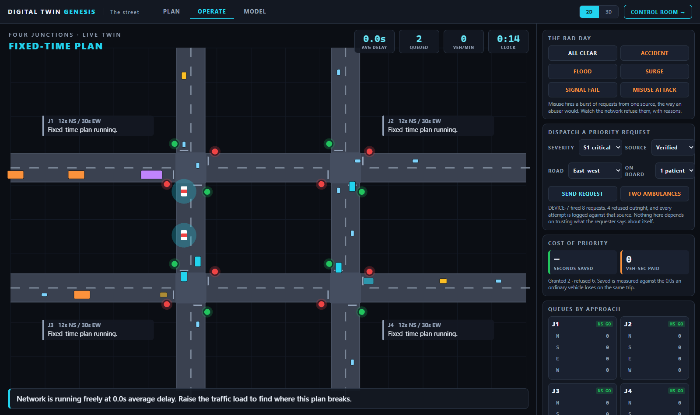
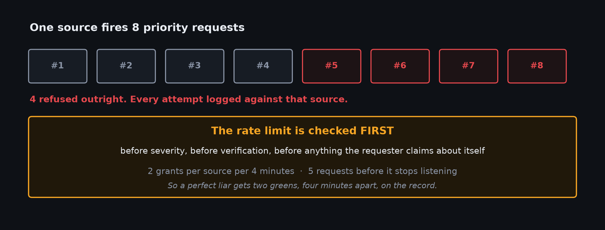
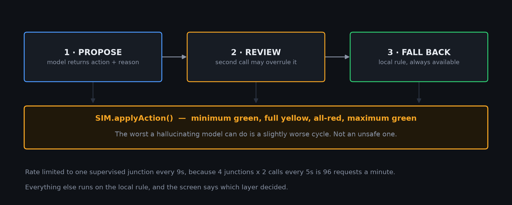
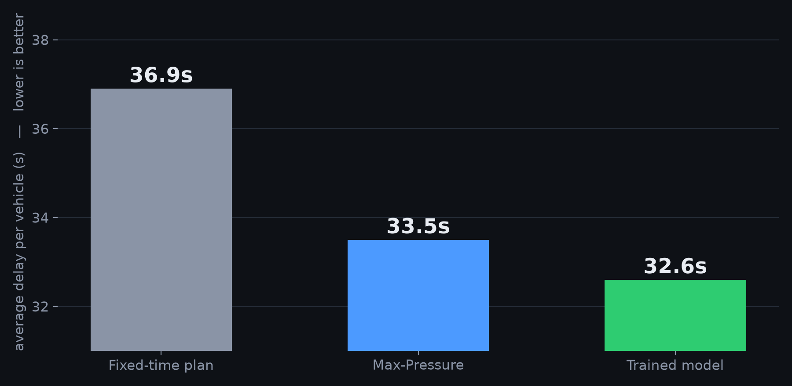
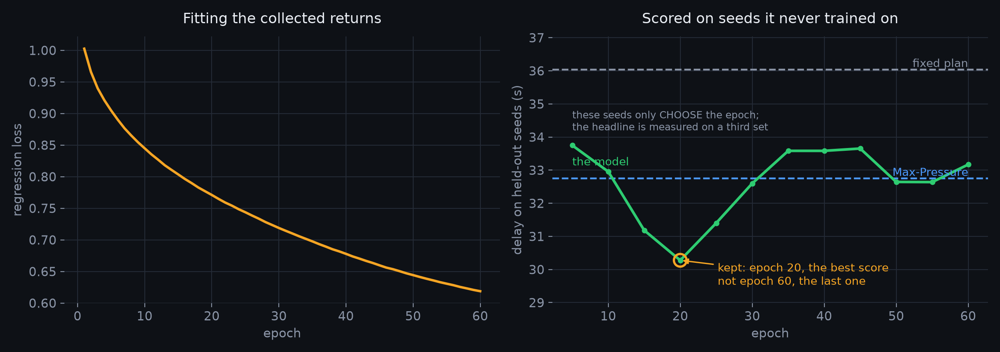
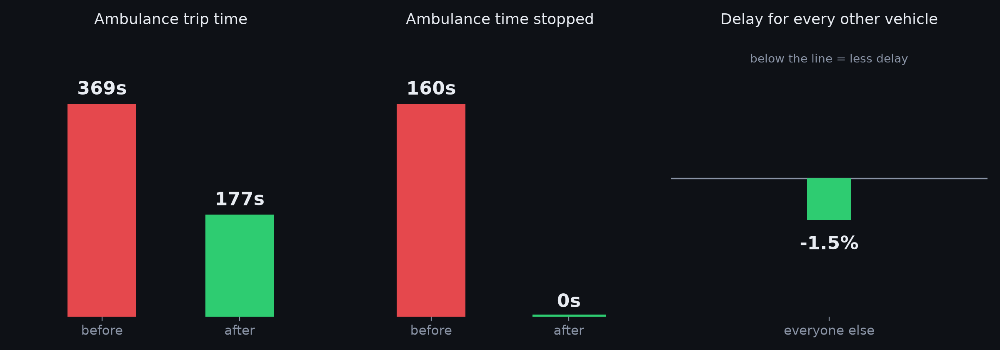
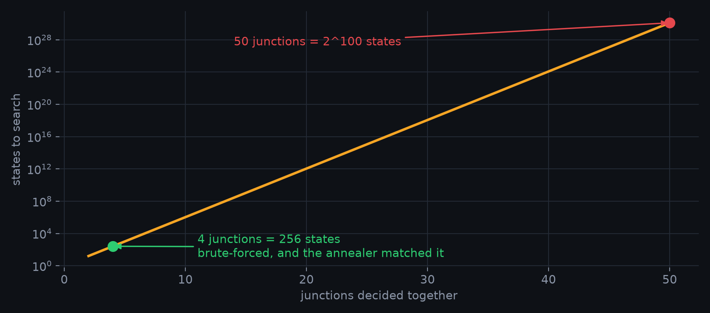
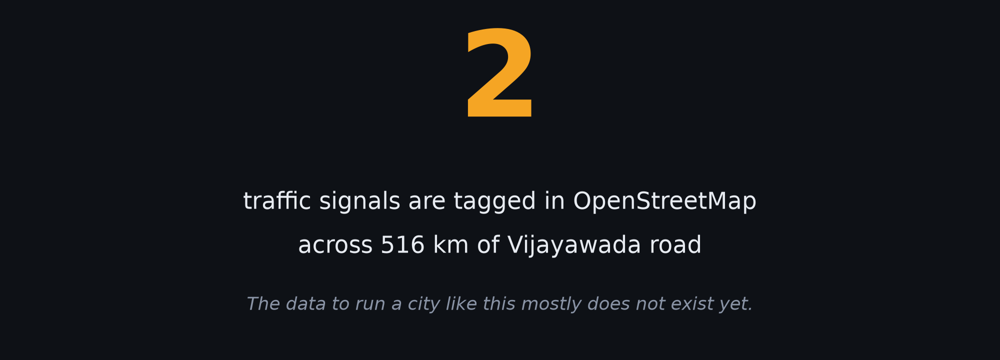

Digital twin of a signalised intersection network
TEAM NEXUS · PROBLEM STATEMENT 4 · IEEE GENESIS 2026
why this problem
That happened in my family, with my grandmother.
The car was not slow. The time was lost standing still, at one red light after another. A ten kilometre drive across this city crosses eight to twelve signalled junctions.
and then it hit a wall
If you give one vehicle priority, somebody else pays for it in waiting time.
Nobody could answer that, because there was nowhere to try it.
So I built the place to try it.
what it is
Real traffic engineering constants. 40 km/h free flow, 2-second headway, 2-second start-up lost time, 1800 PCU/h/lane. Control delay measured the way the Highway Capacity Manual measures it.
Move a green time, press test. It replays the same traffic — same seed, same vehicles, same arrival times. The difference is the plan, not luck.
Every green corridor shows what it saved and what everyone else paid, in vehicle-seconds. No deployed system I could find publishes that.
how it is built

the deliverable

Every test replays a seeded run of identical traffic.
Change a green time, test it, and compare against Webster's 1958 minimum-delay cycle — which is what most Indian junctions actually run.
The tool is not claiming to have invented signal timing. It gives you a way to check whether your change beats the textbook.
the idea nobody else publishes
Two ambulances, same junction, opposite roads. Both genuine.
Something has to give — and the system prints its own arithmetic for why.
That second number is the reason a traffic department would ever agree to any of this.
the question I was asked in round 1

under the bonnet
Trained in Python against this exact simulator running headless in Node.
Same physics, no second implementation.
A standard DQN never beat the fixed plan. Monte-Carlo returns did.
One model proposes an action and a reason. A second call reviews it and can
overrule it.
Underneath both, a local rule decides when the API is down — and says so.
The whole network as one QUBO — the form a quantum annealer takes.
Solved here classically, and checked against brute force. Nothing about it is
quantum, and I will not claim it is.
Everything above is my simulator marking its own homework.
So it was re-run in SUMO on a real 1.71 km Vijayawada corridor imported from
OpenStreetMap, 19 junctions.
stacked models, and the floor under them
Marking someone else's is worth something.

does it actually work

proof it was trained, not tuned

and on a real road

what is already out there
what breaks first

the thing I did not expect to find

So the first useful thing is not a better algorithm.
It is a place to test decisions before you can afford the sensors.
how you know it runs
The browser harness opens both interfaces, clicks through the demo, fires the misuse attack, switches controllers, and fails on any console error or unhandled rejection.
It is the check that stops a demo dying in front of a judge.
Ask me anything — including what does not work.